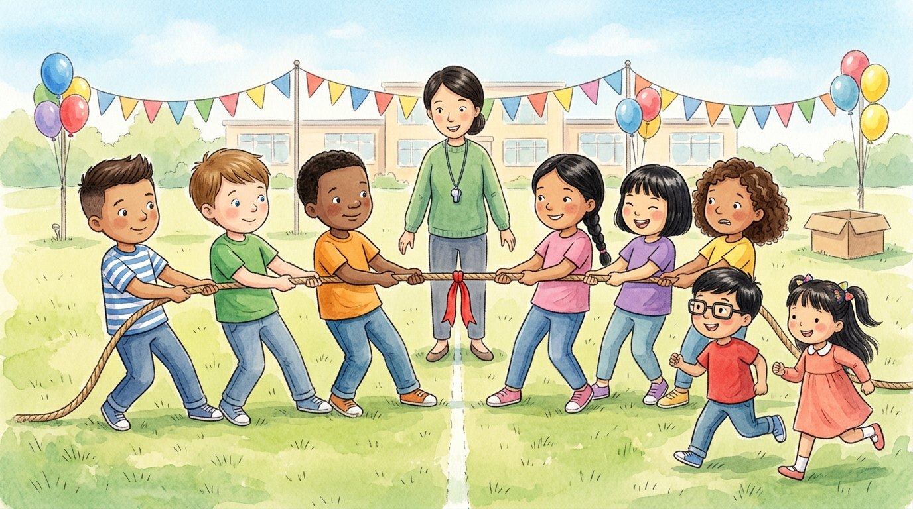

Grade 3 · Science · 3-PS2-1
The tug-of-war
A story about pushes, pulls and motion.
Science words you will learn
Tap a green word to see what it means.
The story
It was field day at Israel's school in Chicago. His cousin Alejandro had come all the way from Texas, and both boys wanted to win the tug-of-war.
The teacher, Mrs. Kim, explained the rules: "Each team the rope from one end. When we pull or something, we use a . A force can make things move, stop them or change their path."
Israel, Alejandro and Jamal lined up on one side. Lucía, Mei and Sofía lined up on the other. On the count of three, everyone pulled as hard as they could.
But the red ribbon in the middle didn't move one bit. "Both teams are pulling just as hard, in opposite directions," said Mrs. Kim. "They are , so the rope stays still."
Then Adrián and Génesis, the little cousins, ran to help Lucía's team. The rope started to move toward their side!
"Now one team is pulling harder than the other," the teacher explained. "The forces are , and the rope moves toward the side that pulls harder." Israel and Alejandro landed on the grass, laughing. Mrs. Kim smiled. "Remember: balanced forces do not change an object's motion. Unbalanced forces can change its speed or direction."
Next they took turns pushing a cardboard box down the hallway. Israel pushed it gently, and the box moved slowly. Alejandro pushed it hard, and the box zoomed away. A bigger force makes a bigger change in .
At the end, the box bumped into the wall and stopped. "The wall pushed it back the other way," said Israel, very proud of his discovery. The of a force matters too: which way we push or pull.
That day, Israel and Alejandro didn't win the tug-of-war, but they understood why. "Next year," said Alejandro, "we'll bring more cousins." And everyone laughed.
Glossary
- force
- A push or a pull. Forces can make things move, stop them or change their direction.
- pull
- To use a force to bring something toward you, like when you tug on a rope.
- push
- To use a force to move something away from you, like when you slide a box forward.
- balanced forces
- Equal forces that go in opposite directions. They cancel out. Balanced forces do not change an object's motion.
- unbalanced forces
- Forces that are not equal. Unbalanced forces can change an object's speed or direction.
- motion
- A change in an object's position. It can be fast or slow.
- direction
- The way or side that something moves or that a force goes.
Questions
Choose the correct answer. If you make a mistake, the story shows you where the answer is.
-
Question A. What is a force?
When we pull or push something, we use a force.
-
Question B. Why didn't the rope move at first?
Both teams pulled just as hard in opposite directions: the forces were balanced.
-
Question C. What happened when Adrián and Génesis helped Lucía's team?
The forces became unbalanced, and the rope moved toward the side that pulled harder.
-
Question D. What happened when Alejandro pushed the box harder?
A bigger force makes a bigger change in motion.
-
Question E. Besides how strong it is, what else matters about a force?
The direction of a force matters too: which way we push or pull.